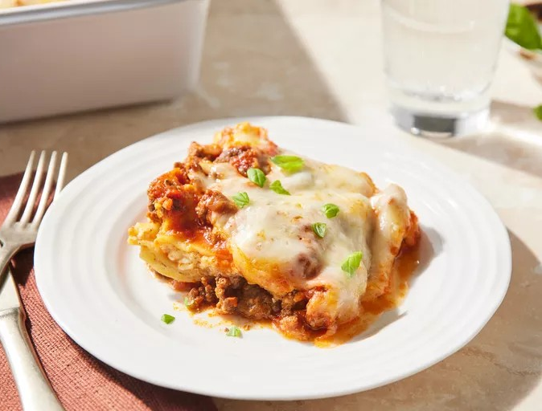

Easy Lasagna

Easy lasagna is a comforting and flavorful dish that requires minimal
effort. It typically consists of layers of lasagna noodles, a rich meat
sauce (often made with ground beef or turkey), and a creamy cheese
mixture. The cheese layer is a combination of cottage cheese, mozzarella,
Parmesan, eggs, and seasonings. Once assembled, the lasagna is baked until
bubbly and golden. Serve it with a side of roasted asparagus, garlic
knots, or a fresh arugula-fennel salad for a satisfying meal. Leftovers
can be refrigerated for up to 5 days or frozen for longer storage. Enjoy!
🍝
Ingredients:
- 1 pound lean ground beef
- 1 (32 ounce) jar spaghetti sauce
- 32 ounces cottage cheese
- 3 cups shredded mozzarella cheese, divided
- 2 eggs
- ½ cup grated Parmesan cheese
- 2 teaspoons dried parsley
- salt to taste
- ground black pepper to taste
- 9 lasagna noodles
- ½ cup water
Directions:
Step-1 :Gather all ingredients and preheat the oven to 350 degrees
F (175 degrees C).
Step-2 :Heat a large skillet over medium-high heat. Cook and stir
ground beef in the hot skillet until browned and crumbly, 8 to 10 minutes.
Drain and discard grease. Stir in spaghetti sauce and simmer for 5
minutes.
Step-3 :Combine cottage cheese, 2 cups of mozzarella cheese, eggs,
1/2 of the grated Parmesan cheese, dried parsley, salt, and pepper in a
large bowl.
Step-4 :Spread 3/4 cup of sauce in a 9x13-inch baking dish. Cover
with 3 uncooked lasagna noodles, 1 3/4 cups of cheese mixture, and 1/4 cup
sauce; repeat layers once more. Top with remaining 3 noodles, sauce,
mozzarella, and Parmesan cheese. Pour 1/2 cup water along the edges of the
dish. Cover tightly with aluminum foil.
Step-5 :Bake in the preheated oven for 45 minutes. Uncover and bake
for an additional 10 minutes. Let stand 10 minutes before serving.
Step-6 :Serve and enjoy!